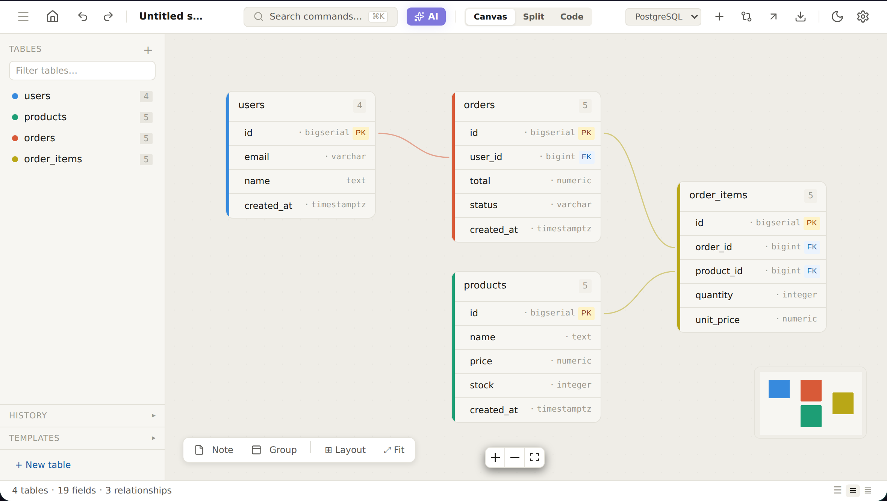

Free · open source · MIT
Draw your database.
Keep it yours.
Modellr is a free database schema designer that runs entirely in your browser. Import the SQL or Prisma you already have, shape it on a canvas, export what your stack needs. No account. Nothing uploaded.
- no sign-up
- 7 export formats
- Postgres · MySQL · SQLite · SQL Server
Subject: orders schema
Source: the real editor, running live
Storage: your browser (IndexedDB)

PRIMARY KEYFOREIGN KEYrelationships are drawn, not typedIndex
What's in the box.
| FEATURE | WHAT IT DOES | KEY |
|---|---|---|
| canvas PK | Tables, typed fields, drag-to-connect relationships, notes, groups, auto-layout. Smooth to a few hundred tables. | core |
| import FK | Paste a pg_dump, a mysqldump or a Prisma schema. Foreign keys, composite keys and defaults come along. | → canvas |
| export FK | SQL for four dialects, Prisma, Drizzle, DBML, JSON, PNG and SVG. | ← canvas |
| snapshots FK | Save versions, diff against any of them, generate migration SQL to review. | → canvas |
| share FK | The schema is compressed into the link: a read-only snapshot, or an iframe embed. No server. | ← canvas |
| ai FK | Optional. Bring your own key (OpenAI, OpenRouter, local Ollama). Proposals are reviewed before they touch your schema. | → canvas |
One schema, every format
Paste SQL. Get Prisma, Drizzle, SQL or DBML.
The panel on the right is real exporter output, generated live in your browser from the SQL on the left.
CREATE TABLE users ( id uuid PRIMARY KEY, email text NOT NULL UNIQUE, created_at timestamptz DEFAULT now() ); CREATE TABLE posts ( id serial PRIMARY KEY, author_id uuid NOT NULL REFERENCES users(id), title text NOT NULL );
// Generated by Modellr
generator client {
provider = "prisma-client-js"
}
model Users {
id String @id @default(uuid()) @db.Uuid
email String @unique
created_at DateTime? @default(now())
posts Posts[]
@@map("users")
}How it works
From a dump to a diagram in three steps.
Bring your schema
Paste SQL or a Prisma schema, start from a template, or draw tables from scratch.
Refine on the canvas
Connect relationships, tidy with auto-layout, add notes, save snapshots as you go.
Export or share
Copy SQL, Prisma, Drizzle or DBML, save PNG/SVG, or send a read-only link.
FAQ
Questions, answered plainly.
Is Modellr really free?
Yes. It is MIT-licensed open-source software with no paid plan, no ads and no account. If it saved you time you can optionally buy the author a coffee; that unlocks nothing.
Where are my schemas stored?
Only in your browser (IndexedDB). Nothing is uploaded. Clearing browser data deletes them, so use Backup to keep a JSON copy.
Does it connect to my database?
No. You paste a SQL dump or a Prisma schema, or start from a template. That is also why your data never leaves your device.
What can I export?
SQL for PostgreSQL, MySQL, SQLite and SQL Server, plus Prisma, Drizzle, DBML, JSON, PNG and SVG. Always review generated SQL before running it.
How does the AI assistant work?
Optional and bring-your-own-key. Requests go straight from your browser to the OpenAI-compatible endpoint you choose, including a local model such as Ollama.
Start designing. It's free.
Open source under the MIT license. No sign-up, no install.